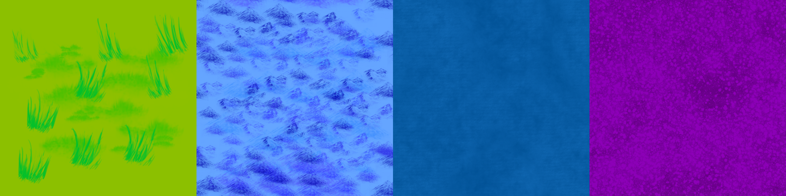

The Experiment
Project Isle started as a survival game on a generated island. Somewhere along the way I got bored of the game, but the systems underneath had turned into something I wanted to keep, so it became a tech demo instead. It's built in Unity 6 and covers three things: how the island map is generated, how textures are loaded and applied from atlases, and how a large map is streamed in around the player.
Map Generation
Most generators run noise over a whole grid and cut it at a threshold. I wanted to try building the island out of shapes instead. Each shape is a ring of ten points whose distance from the center is pushed in and out by Perlin noise, joined up with straight lines. I stack fifty of these, and every new one starts at a random point on the one before it, so the island wanders across the map instead of forming a circle.
That gives me an outline but no idea what's land. To find out, I flood fill the empty space from the edge of a padded grid. Anything the fill can't reach has to be inside the island, and any land cell touching water is the coastline. Running a second fill fills in holes in the shape too, so there are no accidental lakes.
// each blob starts where a random point of the last one ended
newStartingPoint = blob[Random.Range(0, blob.Count)];
// outside = flood fill from the border of the padded grid
// land = every cell the flood fill could not reach
// coast = land cells that touch an outside cellRegions work the same way. I drop a few random seed points on the land and grow them all at once with a breadth-first flood fill, so each region spreads outward until it bumps into its neighbours or the coast. It's the same flood fill idea for the coastline, the interior and the regions, which kept the code small.
Populating the Map
Every region type has its own object to spawn, like trees, set up in the Inspector. The map is scanned once and each node is sorted into its region's list of free positions. Then the spawner picks a random region that still has space, picks a random position inside it, and swaps that position with the last one in the list before popping it off, so removing a used spot is instant.
Chunks and Streaming
The map is 1024 by 1024 tiles, which is over a million nodes, so building it all at once was never an option. It's split into 32 by 32 chunks of 32 by 32 tiles, and only the chunks inside a circle of radius three around the player exist at any time. When the player steps into a new chunk, the old meshes and objects go back to a pool and the nearby ones are built. Spawn positions belong to their chunk, so trees appear and disappear along with the ground they stand on.
Texture Atlases
Every chunk is a single mesh with a single material, and a texture atlas is what makes that possible. One big image holds all the tiles, and each tile on the mesh just points its UVs at a different part of it. Each tile gets its own four vertices, so it can have its own UVs, and the map node's region decides which part of the atlas it uses.

I wanted the atlases to be data, not code. Two JSON files describe everything: one lists the atlas images, and the other gives each texture an atlas id, a tile size and a position in the grid. A texture service reads the PNGs from StreamingAssets at runtime, so adding a new texture is a JSON entry rather than a code change. The atlas is loaded with point filtering, clamped edges and no mipmaps, which keeps the tile edges crisp and stops neighboring tiles blurring into each other.
// tile (tileX, tileY) of an atlas, as UV coordinates
uMin = (float)(tileX * tileWidth) / atlasWidth;
uMax = (float)((tileX + 1) * tileWidth) / atlasWidth;
// Unity UVs start at the bottom, atlas rows start at the top
vMin = 1.0f - (float)((tileY + 1) * tileHeight) / atlasHeight;
vMax = 1.0f - (float)(tileY * tileHeight) / atlasHeight;The one thing that tripped me up was that Unity's UVs start at the bottom while atlas rows are counted from the top, so the V values have to be flipped.
Object Pooling
Both the chunk meshes and the trees come from a pool. Pools are looked up by id, and asking for an object returns an inactive one if there is any and only creates a new one when there isn't. That means walking around the island reuses the same GameObjects instead of creating and destroying them every time a chunk changes.
What I Learned
The atlas approach kept draw calls low, since a whole chunk is one mesh and one material no matter how many tile types it uses. I was also surprised how far flood fill got me: the coastline, the interior and the regions all came from nearly the same piece of code. And chunking had to be a decision made early, because a map this size can't be treated as one object.
What I'd Improve Next
A new mesh is built every time a chunk loads, so there's a small hitch when crossing chunk borders. Caching those meshes would fix it. The tile used for each region is also picked with fixed ids in code, and it should come from the JSON like everything else. Beyond that:
- Add more region types, since seven seed points currently share only three.
- Add padding around each atlas tile to prevent edge bleeding if filtering is ever turned on.